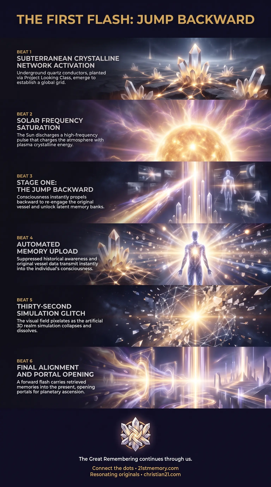

The First Flash
The First Flash — the initial high-frequency discharge that jumps consciousness backward along the timeline to reclaim the original vessel.
The First Flash jumps consciousness backward along the timeline to reclaim the original vessel and upload latent memory.
Test your understanding of Jump Backward — the First Flash temporal reversal that restores original consciousness and uploads latent memory.

The First Flash — the initial high-frequency discharge that jumps consciousness backward along the timeline to reclaim the original vessel.

The Four Stages of Temporal Reversal — grid saturation, jump backward, jump forward, and portal openings as one integrated flash cycle.
The Jump Backward initiated during the First Flash is the foundational temporal mechanism of the Great Awakening process, designed to restore human consciousness to its original state. Activated following the energization of the global quartz crystal network by the Sun, the First Flash sends consciousness backward along the timeline to re-engage the original physical vessel and unlock latent memory banks. This backward movement is not an isolated displacement, but the first phase of an integrated temporal cycle that instantly bridges past, present, and future timelines. By collapsing simulation-bound temporal distortions, the First Flash and its corresponding Jump Backward facilitate a comprehensive memory upload, reinstating the baseline awareness necessary for planetary ascension and dimensional alignment.
The First Flash acts as an energetic key that unlocks the suppressed identity of human consciousness through a direct temporal reversal. Rather than moving strictly forward into unknown states, the ascension process mandates a return to origin, forcing consciousness to retrogress to its pristine state before advancing. This reveals that human evolution is fundamentally an act of remembrance and reclamation rather than novel construction.
Temporal architecture operates as a navigable continuum rather than a rigid linear progression. The execution of the Jump Backward proves that past timelines remain fully accessible when energized by appropriate electromagnetic and aetheric frequencies. The 3rd realm simulation cannot maintain its structural integrity under high-frequency saturation, causing artificial temporal locks to dissolve.
Consciousness and physical vessels are bound to precise frequency signatures recorded within crystalline memory banks. The Jump Backward guarantees that no essential memory or vessel parameter is lost during the shift, as the dual-flash cycle recalibrates every soul to its true baseline prior to portal activation.
The prerequisite infrastructure for the First Flash relies on the subterranean quartz crystal network. These crystalline conductors were previously embedded underground using time travel technology (Project Looking Glass) by positive oversight entities, including the Galactic Ancestral Alliance (GAA), Pleiadians, Barron, and White Hats. Having jumped forward into the future to plant these devices, forces returned to the present moment, allowing the crystals to emerge from the earth on an automated timer during the designated phase.
Once exposed, supervisor entities from the 2nd Realm and ET command structures signal the activation of the Sun. The Sun discharges an intense pulse of high-frequency energy that interacts with newly generated aether in the atmosphere. This reaction charges the quartz crystals, establishing a global EMP grid that completely covers the realm and secures all localized soul signatures ("no sol escapes").
The energetic charging triggers three rapid, sequential flashes ("bing, bing, bing"):
Stage 1: Grid Saturation and Initial Discharge — A continuous bright light saturates the realm, fully energizing the crystalline nodes with high-frequency plasma crystalline energy.
Stage 2: The First Flash (Jump Backward) — The first flash occurs, instantly propelling awareness backward along the timeline. Consciousness reconnects with the original vessel and accesses stored historical awareness held within planetary and crystalline memory banks.
Stage 3: The Second Flash (Jump Forward) — Immediately following the backward impulse, a second flash propels consciousness forward into the present/future state, carrying the uploaded memories and vessel recalibrations into real-time awareness.
Stage 4: The Third Flash (Portal Openings) — A final flash generates a massive planetary portal, allowing resonating souls to ascend while establishing global healing sanctuaries for remaining populations.
During the transition between the Jump Backward and forward return, the artificial framework of the 3rd realm simulation undergoes severe instability. For approximately thirty seconds, the visual field and physical environment glitch out and pixelate. This temporary fragmentation marks the collapse of artificial timeline overlays and leads directly to the structural re-alignment of the physical environment with the baseline conditions of the 2nd Realm.
The Jump Backward directly interacts with the localized plasma crystalline field generated by the aetheric grid. The crystalline network serves as a two-way conduit, both broadcasting the high-frequency pulses needed for temporal displacement and receiving the memory streams retrieved during the flash.
Mechanically, the Jump Backward is strictly dependent on the prior placement of the quartz crystal nodes via Project Looking Glass time operations. Without the crystalline receivers anchored in the earth, the high-frequency solar pulse could not form the stable electromagnetic grid required to contain consciousness during timeline displacement.
Laterally, the successful completion of the backward-forward sequence is the mandatory threshold for the Third Flash and subsequent portal ascension. Souls holding the ancient vibrational frequency move directly from timeline re-integration to physical elevation into supervising craft stationed above the realm.
The execution of the Jump Backward neutralizes all negative timeline manipulation and artificial control structures installed within the 3rd realm simulation. By bypassing linear constraints, the process renders parasite-driven interference ineffective against the high-frequency shift.
Human consciousness achieves total re-integration of identity, reclaiming ancient memories and vessel attributes that were previously fractured by lower-density existence. This rapid download eliminates the requirement for lengthy evolutionary cycles, compressing centuries of spiritual recovery into momentary flashes.
For populations remaining on Earth after the portal activation, the timeline stabilization accomplished during the dual flashes provides the foundation for planetary restoration. Under the supervision of the Galactic Ancestral Alliance (GAA), Space Force, and 2nd Realm specialists, global sanctuaries utilize the newly established aetheric frequencies to heal remaining personal and collective traumas in a safe, controlled environment.
This topic is free to share. Support the archive →